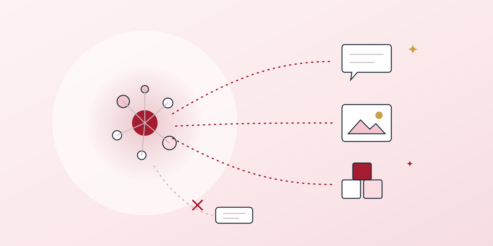
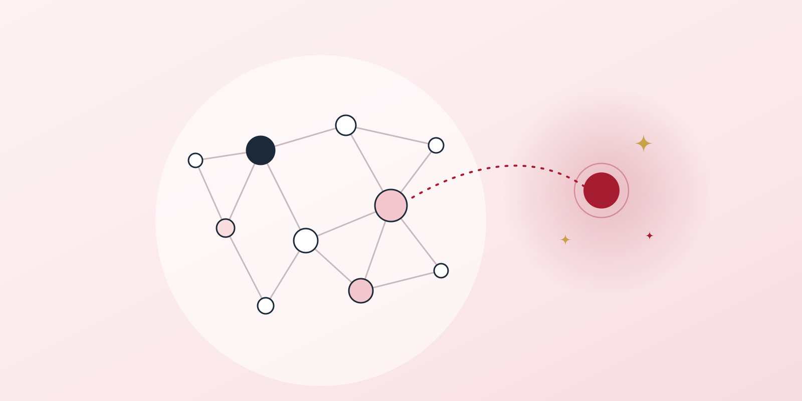

Short essays on how people learn and how I want to design for them. Each one starts from an idea that stuck with me and ends with how I would use it.
Post #2
When Thoughts Come Before Words: A Reflection on CBE and Accessibility
1 min read · On competency-based education, ADHD and dyslexia, and designing for accessibility from the start

Flexibility alone does not guarantee accessibility.
Learning about competency-based education (CBE) made me reflect on my own experiences as a learner. Growing up with ADHD and dyslexia, I have often felt like someone whose thoughts come before words. I may have an idea or understand a concept, but translating that understanding into the expected form of expression can be difficult. Sometimes, I become so focused on how to communicate my thinking that I lose sight of what I actually want to say. That frustration can turn into self-blame, making me question my ability rather than recognize the barriers I am facing.
What interests me about CBE is its emphasis on what learners know and can do. The possibility of allowing learners different amounts of time and different ways to demonstrate their understanding feels personally meaningful. It makes me wonder how my experience might have been different if I had been given more opportunities to show my thinking in ways that worked for me. I might have spent less energy doubting myself and more energy developing my ideas.
At the same time, I do not think flexibility alone guarantees accessibility. A course can allow students to move at their own pace while still relying on a single assessment format that creates barriers. For me, meaningful accessibility involves clear expectations, support, and ways to demonstrate learning that fit the competency being assessed. These considerations should be part of the design from the beginning, rather than something students must repeatedly request after encountering difficulties.
I feel hopeful seeing educational approaches that take individual differences seriously.
Three ideas I’m carrying forward
Separate the thinking from the format. Assess the competency itself, not a learner’s fluency in one way of expressing it.
Flexible pace is not enough. Offer more than one way to demonstrate learning, with clear expectations and support.
Design access in from the start. Learners should not have to keep asking for what the design could have provided.
Post #1
Connecting New Learning to What We Already Know
2 min read · Drawing on Ertmer & Newby on cognitivism and constructivism, and Falbel on constructionism

We understand new things by connecting them to what we already know.
One idea has really stayed with me: we understand new things by connecting them to what we already know. At first, I understood this as “people can only learn things related to their existing knowledge.” After reading more about how learning works, I would explain it a little differently. We can learn something unfamiliar, but we need a starting point that helps us make sense of it. This made me wonder: when someone struggles to learn, what connection might they be missing?
I can see this in my own learning. My main interests are relationships, parenting, and well-being. When a concept helps me understand my own reactions or a difficult relationship, I want to learn more. I bring my questions to the reading, and the reading gives me words to explain experiences I could not clearly describe before. Having that personal connection helps me understand and remember the ideas.
Ertmer and Newby’s explanation of cognitivism helped me understand why this happens. Learners already have ways of organizing knowledge in their minds, called schemas. Teachers can use examples and comparisons to help new ideas connect to what learners already understand. Constructivism adds another idea: we build and change our understanding through experience. Learning can also mean realizing that an old explanation no longer fits what we are experiencing.
Falbel’s discussion of constructionism helped me think about how making something can support learning. When I turn an idea into a story, prototype, or interactive activity, I have to explain my thinking more clearly. What would happen in this situation? Why would someone respond this way? What if another person sees it differently? Creating something helps me notice gaps in my understanding. It also allows other people to respond to my ideas and help me improve them.
I want to bring these ideas into my projects about self-awareness and relationships. For example, I could start with a familiar situation: wanting to express a need but worrying about the other person’s reaction. Learners could explain how they understand the situation, explore a new concept, and then look at the situation again. They could also create a short story with different choices and endings, share it, and make changes based on feedback.
Writing this has made me pay more attention to what learners already bring: their experiences, beliefs, questions, and ways of explaining things. I want to give them space to share these starting points. As a learning designer, I hope to help people connect new ideas to their lives while supporting them as they question and expand what they already understand.
Three ideas I’m carrying forward
Find the missing connection. When someone struggles to learn, ask what starting point they lack, not what ability.
Design from schemas. Use familiar situations, examples, and comparisons so new ideas have somewhere to attach.
Make to understand. Turning an idea into a story or prototype exposes the gaps and invites feedback.
Want to talk about learning?
I’m always happy to compare notes on how people learn and how to design for it.